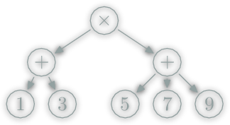

Latin pars (ōrātiōnis), meaning part (of speech).
From String:
(1+3)*(1+5+9)To data structure:

Parsec lets you construct parsers by combining high-order Combinators to create larger expressions.
Combinator parsers are written and used within the same programming language as the rest of the program.
The parsers are first-class citizens of the languages [...]"
whitespaces = many (oneOf "\t ")
number = many1 digitRight " \t " -- whitespaces on " \t "
Right "" -- whitespaces on "32"
Right "32" -- number on "32"
-- number on " \t 32 "
Left "number" (line 1, column 1):
unexpected " "
expecting digitnumber :: Parser String
number = many1 digit
number' :: Parser Int
number' = do
string_of_number <- many1 digit
return (read string_of_number)"32" :: [Char] -- number on "32"
32 :: Int -- number' on "32"isolatedNumber :: Parser String
isolatedNumber = do
_ <- whitespaces
n <- number
_ <- whitespaces
return nRight "32" -- isolatedNumber on " \t 32 "/
#